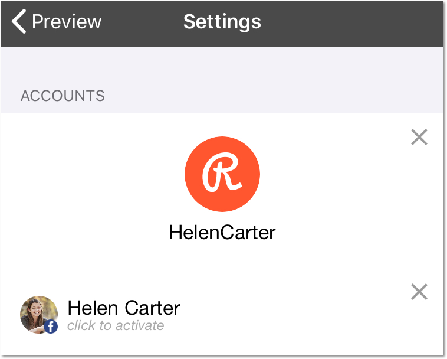
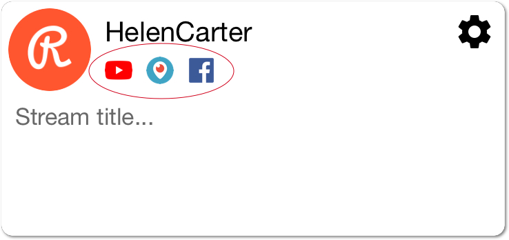
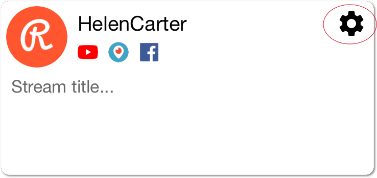

Streaming to multiple platforms
1
Connect your camera.
Help connecting GoPro.
2
Sign in with Restream account: "Settings" > "Continue with Restream".
3
Make sure your Restream account is active:

4
Check your active channels:

5
Open Restream settings to set up additional channels:

6
Add title to your stream (optional).
7
Start streaming!